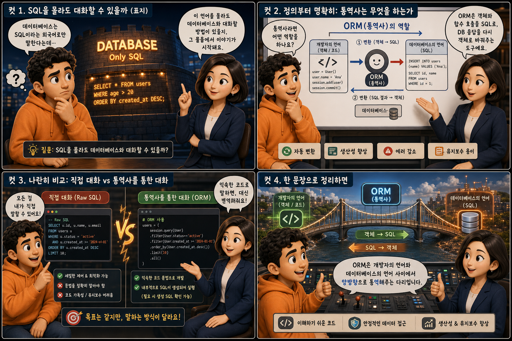
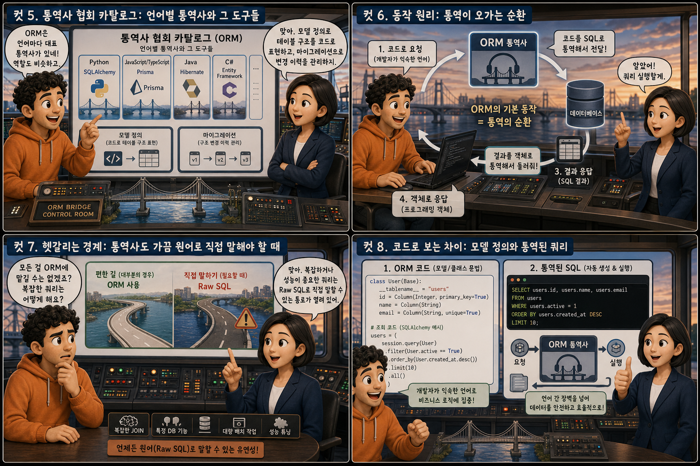

SQL이라는 외국어로만 말하는 ‘데이터베이스’와, 그 사이에서 통역해주는 ‘ORM’이라는 통역사 이야기를 12컷으로 풀어봅니다.
ORMvsSQL
데이터베이스는 오직 SQL이라는 정해진 문법으로만 대화합니다. 문제는 프로그래밍을 처음 배우는 사람이 SQL 문법까지 동시에 익히기가 쉽지 않다는 점입니다. 무뚝뚝한 표정으로 외국어 메뉴판을 들고 서 있는 손님과, 그 앞에서 곤란해하는 개발자를 떠올려 보세요. 이 둘 사이에 서서 통역을 해주는 도구가 있다면 어떨까요. 이 글에서는 그 통역사 — ORM(Object-Relational Mapping) — 이 SQLAlchemy와 Prisma라는 이름으로 어떻게 SQL을 몰라도 데이터베이스와 대화하게 해주는지, 통역사 비유를 따라 하나씩 살펴봅니다.
PART 1 / 3 — 통역사의 등장 (컷 01–04)

fourcut-01 — 컷 01 ~ 04
컷 01
SQL을 몰라도 대화할 수 있을까
데이터베이스는 SQL이라는 외국어로만 말한다. 이 언어를 몰라도 대화할 방법이 있을까.
무뚝뚝한 표정의 손님이 알아볼 수 없는 기호로 빼곡한 메뉴판을 들고 서 있습니다. 이 손님의 몸은 데이터베이스 서버 랙 실루엣과 겹쳐 있고, 그가 하는 말은 오직 SQL 문법뿐입니다. 그 앞에 앉은 개발자는 메뉴판을 보며 곤란한 표정을 짓습니다. 이때 둘 사이에 정장을 갖춰 입은 통역사가 등장해 손을 들어 중재합니다. 이 시리즈는 그 통역사, ORM(Object-Relational Mapping)이 어떻게 SQL 없이도 데이터베이스와 대화하게 해주는지를 다룹니다.
컷 02
정의부터 명확히: 통역사는 무엇을 하는가
ORM은 프로그래밍 언어의 객체와 함수 호출을 SQL 문장으로, 데이터베이스의 응답을 다시 객체로 자동 변환해주는 도구다.
ORM(Object-Relational Mapping)은 이름 그대로 객체(Object)와 관계형 데이터베이스(Relational)를 서로 연결(Mapping)해주는 도구입니다. 개발자가 익숙한 프로그래밍 언어의 문법으로 User.find(1)처럼 코드를 작성하면, ORM이 이를 SELECT * FROM users WHERE id=1이라는 SQL 문장으로 통역해 데이터베이스에 전달합니다. 데이터베이스가 응답을 돌려주면 ORM은 그 결과를 다시 프로그래밍 언어의 객체로 통역해 돌려줍니다. 손님이 외국어로만 말해도 통역사가 있으면 대화가 되듯, ORM이 있으면 SQL 문법을 몰라도 데이터베이스와 대화할 수 있습니다.
컷 03
나란히 비교: 직접 대화 vs 통역사를 통한 대화
Raw SQL은 세밀하게 통제할 수 있지만 문법을 정확히 알아야 하고, ORM은 익숙한 문법으로 다루지만 내부적으로는 여전히 SQL이 생성되어 실행된다.
Raw SQL을 직접 작성하는 방식은 원하는 쿼리를 한 글자까지 세밀하게 제어할 수 있지만, 그만큼 SQL 문법을 정확히 알고 있어야 합니다. ORM을 쓰는 방식은 익숙한 프로그래밍 언어의 객체와 함수 호출로 데이터베이스를 다룰 수 있어 진입 장벽이 낮지만, 그 코드가 결국 내부적으로 SQL로 통역되어 실행된다는 사실은 변하지 않습니다. 통역사를 쓰면 대화는 편해지지만, 대화 내용이 결국 상대방의 언어로 전달된다는 본질은 같습니다. 정확한 문법 필요 / 세밀한 제어 가능 대 익숙한 문법 사용 / 내부적으로 SQL 자동 생성의 저울질입니다.
컷 04
한 문장으로 정리하면
ORM은 개발자의 언어와 데이터베이스의 언어 사이에서 양방향으로 통역해주는 다리다.
ORM
코드의 언어를 SQL로 옮긴다
SQL
데이터베이스가 실제로 알아듣는 말
definition
ORM은 개발자가 쓰는 프로그래밍 언어와 데이터베이스가 쓰는 SQL 언어 사이에서 양방향으로 통역해주는 다리입니다. 이 한 문장만 기억해도 ORM이 왜 필요한지, 무엇을 대신해주는지 대부분 이해할 수 있습니다. 개발자가 익숙한 문법으로 말하면, 그 뒤에서 통역사가 SQL로 옮겨 전달하고 응답도 다시 옮겨 돌려줍니다.
PART 2 / 3 — 도구와 동작 원리 (컷 05–08)

fourcut-02 — 컷 05 ~ 08
컷 05
통역사 협회 카탈로그: 언어별 통역사와 그 도구들
ORM은 프로그래밍 언어마다 대표적인 도구가 있으며, 모델 정의로 테이블 구조를 코드로 표현하고 마이그레이션으로 그 구조의 변경 이력을 관리한다.
ORM은 프로그래밍 언어마다 대표적인 도구가 정해져 있습니다. Python에서는 SQLAlchemy가, Node.js/TypeScript에서는 Prisma가 대표적인 통역사 역할을 맡습니다. 이 통역사들은 모델(Model)이라는 설계도를 통해 테이블의 구조(어떤 열이 있고 어떤 자료형인지)를 코드로 표현합니다. 그리고 그 구조가 바뀔 때마다 마이그레이션(migration)이라는 이력 파일을 남겨, 테이블 구조가 언제 어떻게 변경되었는지 추적하고 실제 데이터베이스에도 그 변경을 순서대로 적용할 수 있게 해줍니다.
컷 06
동작 원리: 통역이 오가는 순환
개발자가 익숙한 코드로 요청하면 ORM이 이를 SQL로 통역해 데이터베이스에 전달하고, 응답도 다시 통역해 객체로 돌려주는 순환이 ORM의 기본 동작 방식이다.
개발자 코드→ORM 통역→SQL 문장→데이터베이스→row 반환→객체로 통역
개발자가 User.create(name='송')처럼 익숙한 코드로 명령을 내리면, ORM은 이를 INSERT INTO users (name) VALUES ('송') 같은 SQL 문장으로 통역해 데이터베이스에 전달합니다. 데이터베이스는 SQL을 실행한 결과를 행(row) 형태로 돌려주고, ORM은 그 행을 다시 개발자가 다루기 쉬운 객체로 통역해 돌려줍니다. 손님이 주문하면 통역사가 옮겨 전달하고, 요리가 나오면 다시 통역사를 거쳐 손님에게 설명이 돌아오는 것과 같은 순환입니다.
컷 07
헷갈리는 경계: 통역사도 가끔 원어로 직접 말해야 할 때
ORM을 쓰더라도 복잡하거나 성능이 중요한 쿼리는 여전히 Raw SQL을 직접 작성해 실행할 수 있는 통로가 열려 있다.
ORM은 대부분의 데이터베이스 작업을 코드 문법만으로 처리할 수 있게 해주지만, 통계 집계나 복잡한 조인처럼 세밀한 제어가 필요한 쿼리에서는 오히려 Raw SQL을 직접 작성하는 편이 더 명확하고 빠를 때가 있습니다. SQLAlchemy와 Prisma 모두 필요할 때 SQL 문장을 그대로 실행할 수 있는 기능(raw query)을 제공합니다. 즉 ORM을 쓴다고 해서 SQL을 완전히 몰라도 되는 것은 아니며, 통역사에게 맡기되 필요하면 직접 원어로 말할 수 있는 통로도 함께 열어두는 것이 실무적인 접근입니다. ORM도 만능은 아니다
컷 08
코드로 보는 차이: 모델 정의와 통역된 쿼리
ORM 코드 — 통역사에게 말하기
# 익숙한 문법으로 요청한다
user = User.query.filter_by(
id=1
).first()
실제 실행되는 SQL — 통역된 결과
-- 데이터베이스가 실제로 받는 문장SELECT * FROM users
WHERE id = 1LIMIT1;
SQLAlchemy에서는 User.query.filter_by(id=1).first()처럼 파이썬 객체 문법으로 원하는 데이터를 요청합니다. Prisma에서도 prisma.user.findUnique({ where: { id: 1 } })처럼 익숙한 함수 호출 형태로 같은 일을 할 수 있습니다. 이 코드는 겉으로는 SQL이 전혀 보이지 않지만, ORM이 내부에서 이를 SELECT * FROM users WHERE id = 1 LIMIT 1;이라는 SQL 문장으로 통역해 데이터베이스에 전달합니다. 개발자는 통역사에게 자연스럽게 말을 건넬 뿐이지만, 데이터베이스가 실제로 알아듣는 언어는 여전히 SQL입니다.
PART 3 / 3 — 실전 감각과 요약 (컷 09–12)
fourcut-03 — 컷 09 ~ 12
컷 09
흔한 실수: 통역사의 습관을 눈치채지 못한 개발자
ORM이 내부적으로 비효율적인 SQL을 여러 번 생성하는 것을 모른 채 쓰면 N+1 쿼리 문제로 느려지고, 마이그레이션을 실행하지 않으면 코드와 실제 테이블 구조가 어긋난다.
⚠ N+1 쿼리 문제
ORM이 목록을 조회한 뒤 각 항목마다 관련 데이터를 따로따로 다시 조회하면, 쿼리 하나면 될 일이 N개의 추가 쿼리로 늘어납니다. ORM이 편리하게 통역해주는 대신, 그 통역이 내부적으로 얼마나 많은 SQL을 반복해서 만들어내는지 신경 쓰지 않으면 눈에 띄지 않게 서비스를 느리게 만듭니다.
✓ 코드는 바뀌었는데 실제 테이블은 그대로
또 다른 흔한 실수는 모델 코드만 수정하고 마이그레이션 파일을 실제로 실행하지 않는 것입니다. 이 경우 코드상의 설계도는 바뀌었는데 실제 데이터베이스 테이블 구조는 예전 그대로여서, 둘 사이의 불일치로 인한 오류가 예기치 않게 발생합니다.
통역사가 손님 한 명 한 명에게 같은 질문을 반복해서 되묻는 장면을 상상해 보세요. 쪽지가 잔뜩 쌓이는 동안 대화는 점점 느려집니다. 통역사의 습관을 눈치채지 못하면, 편리함 뒤에 숨은 비용을 그대로 떠안게 됩니다.
컷 10
트레이드오프 비교표: 통역사에게 맡길 때 얻는 것과 잃는 것
ORM은 SQL 문법을 몰라도 익숙한 언어 문법으로 데이터베이스를 다룰 수 있게 해주지만, 그 대가로 내부적으로 실제 어떤 SQL이 실행되는지 파악하기 어려워질 수 있다.
같은 목적, 다른 대가
비교 축
Raw SQL
ORM
진입 장벽
SQL 문법을 정확히 알아야 함
익숙한 언어 문법으로 바로 시작
실행 내용의 투명성
투명한 유리창 — 한 글자까지 통제
반투명한 커튼 — 통역을 거쳐 전달
생산성
상대적으로 느림
상대적으로 빠름
세밀한 제어
정밀하게 가능
뭉툭해질 수 있음
성능 파악 난이도
지도와 나침반 — 파악하기 쉬움
안개 낀 지도 — 파악하기 어려움
ORM을 쓰면 SQL 문법을 몰라도 익숙한 프로그래밍 언어 문법만으로 데이터베이스를 다룰 수 있어 진입 장벽이 낮고 생산성이 높습니다. 하지만 통역사가 대신 말을 옮겨주기 때문에, 실제로 데이터베이스에 어떤 SQL 문장이 몇 번 실행되고 있는지 코드만 봐서는 파악하기 어려워질 수 있습니다. Raw SQL은 반대로 문법을 정확히 알아야 하는 대신, 실행되는 내용을 한 글자까지 투명하게 통제할 수 있습니다. 결국 편의성과 투명성 사이에서 어느 쪽에 더 무게를 둘지의 문제입니다.
컷 11
실전 활용: 통역사의 대사를 엿듣고, 서랍을 직접 열어보기
ORM이 실제로 생성하는 SQL 쿼리를 로그로 확인하고, 마이그레이션 실행 뒤 실제 테이블 구조가 바뀌었는지 DB 도구로 확인하는 습관이 문제를 예방한다.
🎧 통역사의 대사를 엿듣기
SQLAlchemy: create_engine(url, echo=True)
Prisma: 쿼리 로그 옵션 켜기
콘솔에 출력되는 실제 SQL 확인
🔍 서랍을 직접 열어보기
마이그레이션 명령 실행
TablePlus·DBeaver·pgAdmin으로 접속
실제 테이블 구조가 바뀌었는지 확인
SQLAlchemy에서는 create_engine에 echo=True 옵션을 주면 ORM이 내부적으로 실행하는 모든 SQL 쿼리가 콘솔에 그대로 출력되어, 통역사가 실제로 무슨 말을 하고 있는지 엿들을 수 있습니다. Prisma도 로그 옵션을 켜면 비슷하게 실제 쿼리를 확인할 수 있습니다. 또한 마이그레이션 명령을 실행한 뒤에는 반드시 DB 관리 도구로 실제 테이블 구조가 원하는 대로 바뀌었는지 직접 눈으로 확인하는 습관이 중요합니다. trust, but verify — 통역사를 믿되, 가끔은 그 대사와 결과물을 직접 확인하는 것이 사고를 예방하는 가장 확실한 방법입니다.
컷 12
판별법과 핵심 요약: 통역사가 필요한 순간
데이터베이스와 대화하는 코드에서 SQL 문장이 보이지 않고 객체와 함수 호출만 보인다면, 그 뒤에는 이미 통역사인 ORM이 일하고 있는 것이다.
가장 간단한 판별법은 이것입니다. 코드에 SQL 문장이 전혀 보이지 않고 객체와 함수 호출만 보인다면, 그 뒤에서 ORM이라는 통역사가 이미 SQL로 옮겨 데이터베이스와 대화하고 있는 것입니다. ORM은 모델로 테이블 구조를 코드로 표현하고, 마이그레이션으로 그 구조의 변경 이력을 관리하며, 개발자가 익숙한 언어로 요청하면 SQL로 통역해 실행하고 결과를 다시 객체로 돌려줍니다. 다만 통역이 항상 최선의 문장으로 이루어지는 것은 아니므로, N+1 쿼리처럼 비효율이 숨어 있지 않은지 가끔 그 대사를 확인하는 습관이 필요합니다. 손님이 외국어로만 말해도 통역사 덕분에 대화가 이어지듯, SQL을 몰라도 ORM 덕분에 데이터베이스와 대화할 수 있습니다.
ORM은 코드와 SQL 사이의 통역사다모델은 테이블의 설계도다마이그레이션은 변경 이력을 관리한다N+1 쿼리를 조심하라필요하면 raw SQL도 쓸 수 있다SQL이 안 보여도 결국 실행된다
SQL을 몰라도, 데이터베이스와 대화할 수 있다
ORM은 개발자가 익숙한 언어로 말하게 하고, 그 말을 SQL로 옮겨 데이터베이스에 전달하는 통역사입니다. 모델로 테이블을 설계하고, 마이그레이션으로 변경 이력을 관리하며, 필요하면 언제든 원어(Raw SQL)로도 말할 수 있는 통로를 열어둡니다.